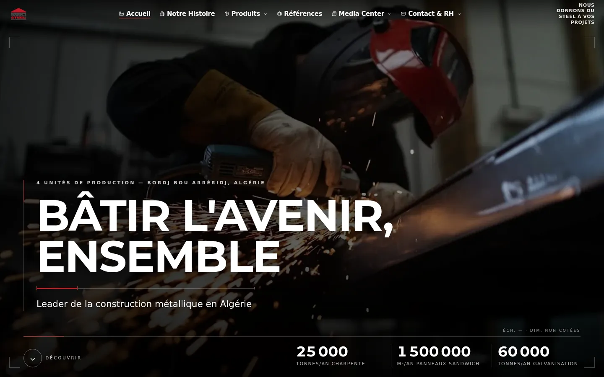
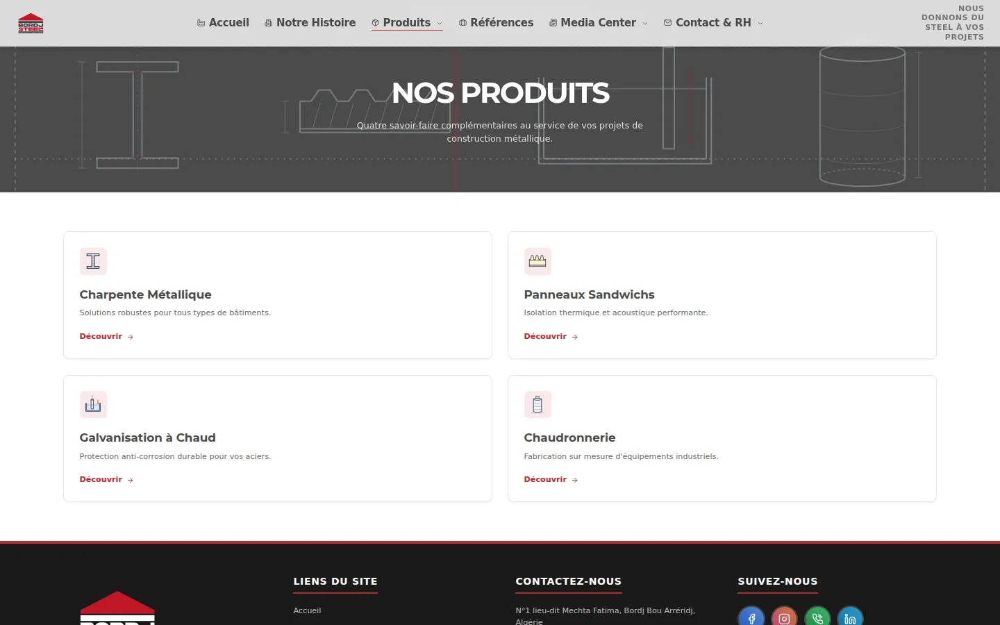
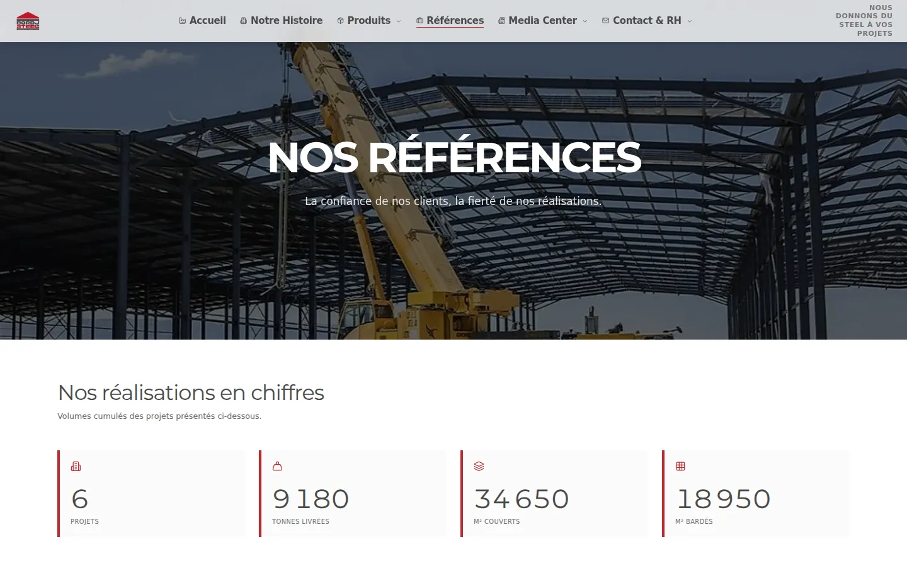
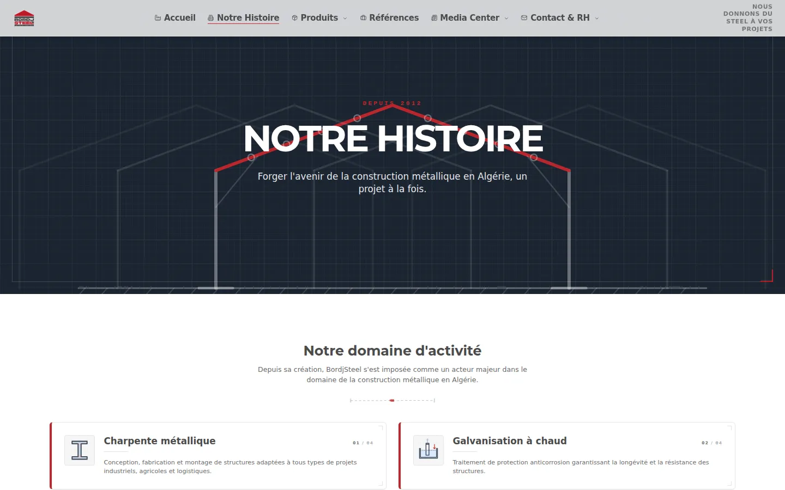
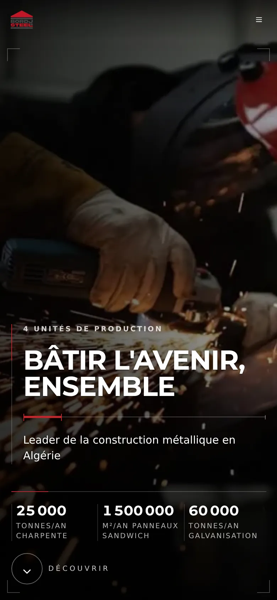
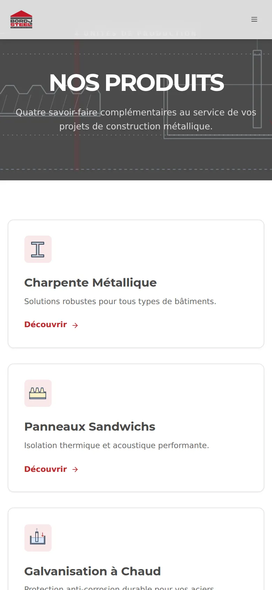

Bordj Steel
En ligne Voir le siteLa présence en ligne d'un fabricant de charpente métallique et de panneaux sandwich : un catalogue par métier, des références chiffrées, un media center et un espace recrutement.
- Secteur
- Construction métallique · B2B · Algérie
- Périmètre
- Site corporate B2B
- Pages
- 12
- Langues
- FR
Livrables
- Site corporate, 12 pages
- Catalogue produits : 4 fiches métier
- Références et chiffres clés
- Media center (blog)
- Contact et recrutement
- Pages légales


Ce que le site apporte au client
Le clientUn fabricant de Bordj Bou Arréridj aux quatre unités de production, qui travaille pour des usines, des projets agricoles et des promoteurs industriels dans toute l'Algérie.
Un acheteur trouve la bonne gamme sans appeler : une page par unité de production, avec ce qu'elle fabrique et à quoi cela sert.
/productsUn bureau d'études lit les caractéristiques techniques en ligne, essaie les épaisseurs de panneau sur une coupe interactive et télécharge le catalogue en PDF.
/products/sandwich-panelsUn client joint directement le bon service, du commercial au montage : chacun a son numéro direct, et numéros comme e-mails se copient d'un clic.
/contactAvant un premier rendez-vous, un maître d'ouvrage voit des chantiers de référence — où, et ce qui a été fourni et monté.
/referencesUn candidat consulte les offres d'emploi et postule, ou envoie une candidature spontanée.
/recrutement
Pages livrées


/products

/references

/about/historySur mobile




Système visuel
Couleurs
- Accent
#BF272C - Texte
#4B4B4B - Secondaire
#6B6B6B - Surface
#F5F5F5 - Fond
#FFFFFF
Typographie
- Montserrat